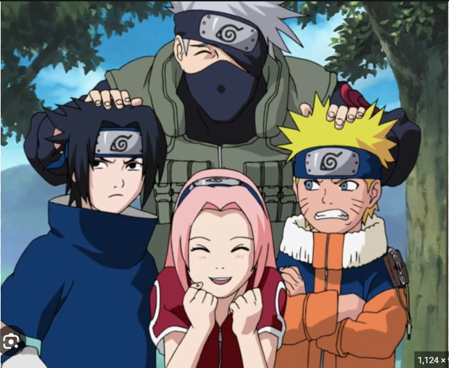
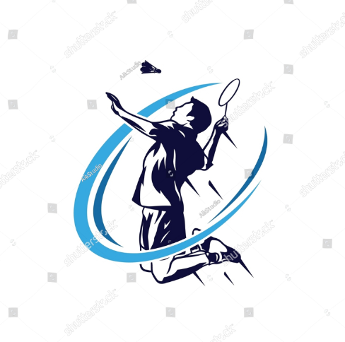
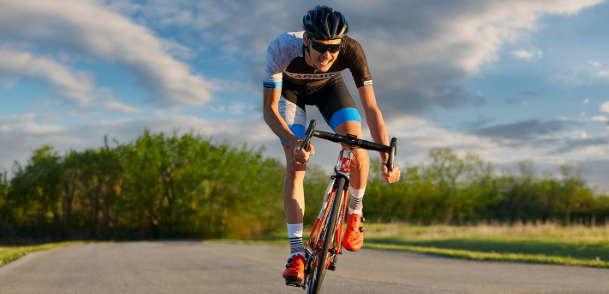
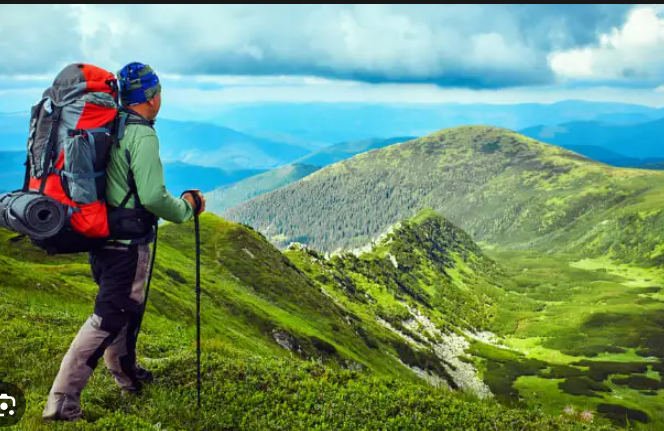
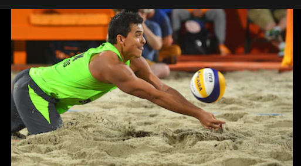
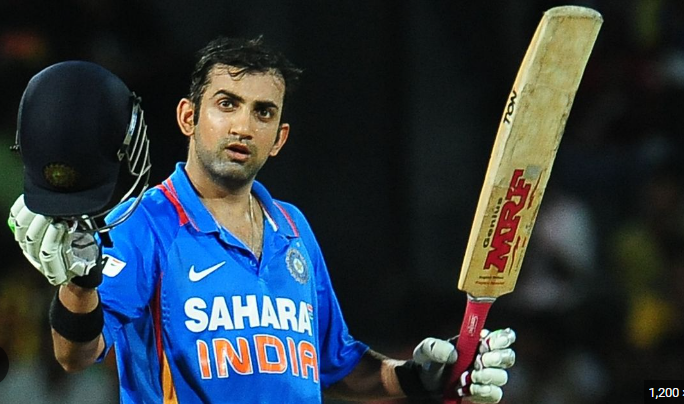
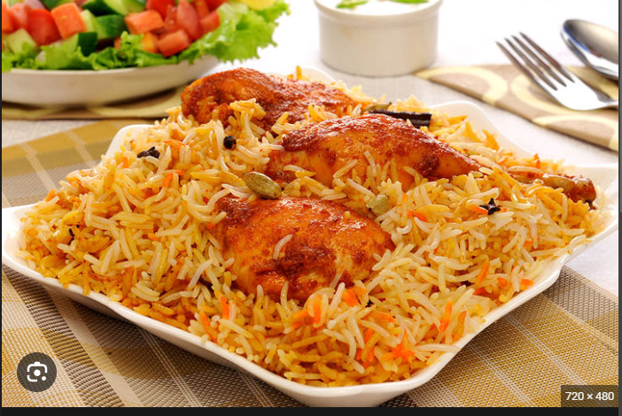
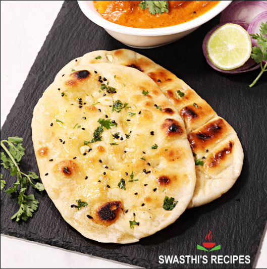
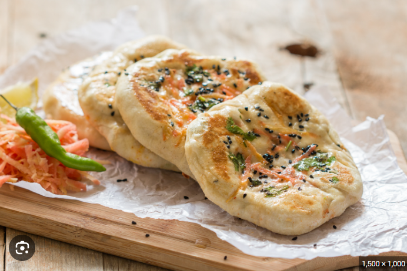

I love to watch anime I am a great enthusiastic towards anime. It's hard to describe about which one is favourite its similar
to a programmer to choose which language is a person favoutite,- Any how these are my top watched anime.
Naruto

One Piece
Bleach
Dragon Ball Z
Death Note
And so on there are still more to add in the list,
I also like to play Cricket as my hobby and participating in sports it's a best way maintain physical and mental strenth.
There are many more activities some are which I like:-Badminton

Cycling

Trekking

Table Tenis
Volleyball

Cricket

Now as you have seen I have a lots activities to do specially in the field of sports were I litterally burns my lots calories which also required me to infuse my calories
to stay with my healtly life styles. Therefore I need a healtly diet were I can get a lot of strenth to work all day and from here my love towards cooking introduce,
I just love to make food with diffrent cousine's which love to enjoy it myself and share it with my family and friends.Some of my favourite recipe's :-
Briyani

- Malai Chicken
Naan and Kulcha with Butter Chicken
Egg Curry
Fish Curry


